Une jeunesse qui façonne son éducation
L'Association YOUTH CLUBs fédère un réseau de clubs de jeunes dans les collèges, lycées et universités de Tunisie. Depuis 2013, nous outillons les apprenants pour qu'ils deviennent acteurs de leur scolarité, de leur santé et de leur avenir, plutôt que simples spectateurs.

« Une éducation de qualité qui implique activement les jeunes. »
Une association née d'une conférence, devenue un réseau national
L'Association YOUTH CLUBs (AYCs) est une organisation tunisienne à but non lucratif, reconnue par l'État, qui regroupe des adhérents à des YOUTH CLUBs implantés dans leurs établissements éducatifs. Elle coordonne ces clubs et réglemente leur organisation sur des principes de transparence et de démocratie, avec une vision axée sur la scolarité, l'éducation formelle, la santé, la citoyenneté et la vie active.
Envie de rejoindre l'aventure ?
Chaque mandat, l'association ouvre ses portes à de nouveaux membres à travers tout le réseau de clubs. Contacte-nous pour savoir comment rejoindre un YOUTH CLUB près de chez toi.
Nous contacter